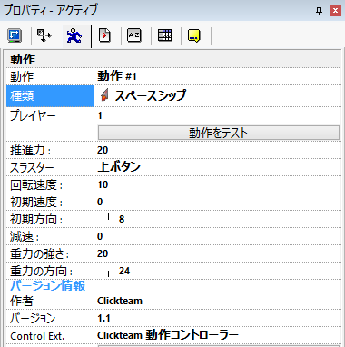

この動作は、ロケットエンジン付きの宇宙船の動きを再現します。 オブジェクトは現在の方向に動きますが、ロケットエンジンの推進力が加わると、動作の向きや速度が徐々に変化します。 この動作は外部の重力を処理します。 Asteroids や Lunar Lander のようなゲームで使用する宇宙船をコントロールするのに最適です。
この動作を選択したら、推進力と重力の強さおよび方向を設定します。 他の項目は自動的に設定されます。 この動作には、 32 方向のアニメーションが設定されたオブジェクトの使用をお勧めします。 "歩く" のアニメーションは宇宙船が画面上を移動する場合に、 "ジャンプ" のアニメーションは推進力が加わった場合に使用されます。
フレームエディタでのプロパティ

図 1: スペースシップ動作のプロパティ
全般のプロパティ
推進力: スラスターのパワーを 0 (パワーゼロ) から 200 (最大パワー) の間で設定します。 指定したボタンを押すと船に推進力が加わります。
スラスター: スラスターを有効にするボタンを選択します。 既定では、上 ボタンまたは発射 1 ボタンです。
回転速度: 左キーまたは右キーを押した時に船が回転する速度です。 0 (回転なし) から 100 (最高速度) の間で指定します。
初期速度: オブジェクトの初期速度を 0 (停止) から 100 (高速) の間で指定します。
初期方向: オブジェクトの初期方向を選択します。 初期速度が 0 でない場合、フレームの開始時に船はすぐにここで設定した方向に移動します。
減速: 船の減速係数を 0 から 100 の間で指定します。 0 の場合、船は減速しません。 100 の場合、船は即座に停止します。 推進力が発生するには、推進力の値がこっこで設定する値より大きくなければなりません。
重力の強さ: 重力の強さを 0 から 100 の間で指定します。 0 の場合、重力はありません。 100 の場合、非常に強力な重力が発生します。 船が重力に逆らって進むには、推進力の値がこっこで設定する値より大きくなければなりません。
重力の方向: 重力の方向を指定します。